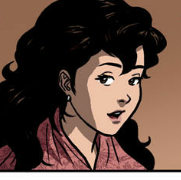

Kabanata 6: Si Kapitan Tiyago
Mayroong karaniwang katangian ng isang Pilipino si Kapitan Tiyago, kagaya ng pandak, hindi kaputian at may bilugang mukha. Siya ang pinakamayaman na siya ding kilalang-kilala ng mga tao dahil sa marami siyang negosyo at ari-arian. Itinuturing niya ang sarili bilang Kastila at hindi Pilipino. Para sa kanya, lahat ng itakda ng mga Kastila ay tama at kapuri-puri, kaya sa pagpupula niya sa mga Pilipino naging isa siyang gobernadorcillo. Basta mga opisyal, ito ay kanyang sinusunod kaya tinuran siyang sipsip ng karamihan. Ang Kapitan ay may taglay na kakuriputan na mukhang namana niya sa kanyang ama at dahil dito ay hindi siya nakapag-aral kaya siya ay naging katulong na tinuruan ng Paring Dominiko. Nang mamatay ang ama ni Kapitan Tiyago at ang Paring Dominiko, siya ay nangalakal at nakilala niya si Pia Alba na siyang naging katulong at kabiyak niya upang maghanap-buhay at yumaman. Ang lupang nabili sa San Diego ang naging tulay sa pagiging matalik na magkaibigan nila ni Padre Damaso.
Anim na taon na ang lumipas, ngunit hindi pa sila nagkakaanak kaya kung saan saan sila namanata at pinayuhan sila ni Padre Damaso na magtungo sa Obando. Dininig na ang kanilang panalangin dahil naglihi na si Pia, ngunit nang maipanganak niya ang anak ay kanya namang kamatayan. Si Padre Damaso ang nag-anak sa binyag ng sinilang na sanggol ni Pia na si Maria Clara. Mula ng mamatay si Pia ay si Tiya Isabel na ang nag-alaga kay Maria Clara at hinandugan siya ng pagmamahal nito, ng kanyang ama at mga prayle. Katorse anyos noon si Maria Clara nang ipasok siya sa beatorio sa Sta. Catalina, malungkot ang kanyang pamamalam kay Padre Damaso, sa kanyang mga kaibigan at sa kababatang si Ibarra na kalaunan ay nagpuntang Europa upang mag-aral. Nagkaroon ng kasunduan si Kapitan Tiyago at Don Rafael na ipag-iisang dibdib sila Maria Clara at Ibarra sa tamang panahon dahil sa kanilang pinaniwalaan na may namumuong pag-iibigan ang dalawa.
Maria Clara
Dalagang anak ni Kapitan Tiago na kilalang-kilala sa angking kagandahan. Kasintahan ni Crisostomo Ibarra at inaanak ni Padre Damaso.
Repleksyon
Dapat na pinaninindigan ang pagiging isang Pilipino at hindi nagpadala o maging sunud-sunuran sa mga dayuhang sumakop. Kahit ikaw pa ang pinakamayaman at pinakamaimpluwensiyang tao sa buong mundo ay wala kang karapatan na pagmalupitan o parusahan ang mga taong hindi gaya sayo ang estado sa buhay. Minsan kung sino pa yung mga taong naglilingkod sa Diyos ay sila pa itong parang hindi alagad ng Diyos sa kasamaang ginagawa nila.